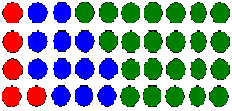

Problem J
|
Jimmy's Balls |
Time Limit :
1 second |
|||||
Jimmy has a very large bag full of balls. Each ball has a single color. There are three colors; red, blue and green. There is atleast one ball of each type and the number of blue balls is more than that of red balls. And the number of green balls is more than that of blue balls. 0 < number of red balls < number of blue balls < number of green balls. Given the total number of balls, how many different colored combinations can there be. For N = 10, there are 4 combinations as shown in the diagram. 
|
|||||||
| Input | |||||||
| There will be many cases. Each case is an integer N ( 6 <= N <= 1000010 ). N denotes the total number of balls in the bag. Input is terminated with a 0. | |||||||
| Output | |||||||
| For each case, output the case number, followed by the answer. Look at the sample for clarification. | |||||||
| Sample Input | Sample Output | ||||||
6 |
Case 1: 1 |
||||||
Problem Setter: Sohel Hafiz |
|||||||